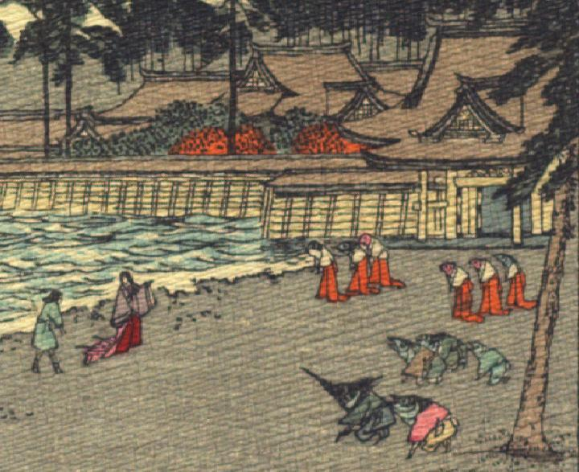

竜宮城に着いた乙姫たちを迎える魚の化物たち。女房姿の乙姫が浦島太郎を岸辺から竜宮城へと誘っている。画面手前の魚たちは着物に袴という姿で、頭部のみを着物から出しており、手足は人間のものである。中に1体かじきのように口先が細く尖った魚がいる。彼らは並んで跪き、乙姫たちを迎えている。画面奥の魚たちは白い着物に赤い袴という女官のような装束で、列を成して立っている。
著作者：J.Dautremer／出典：親書誌：U426_nichibunken_0104：Ourasima／日付：2006／資源識別子：U426_nichibunken_0104_0005_0000
Copyright (c)2010- International Research Center for Japanese Studies, Kyoto, Japan. All rights reserved.